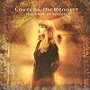

Celtic Lyrics Corner > Artists & Groups > Loreena McKennitt > The Book Of Secrets > The Mummers' Dance
|  | The Mummers' Dance |
| Credits : | Loreena McKennitt |
| Appears On : | The Book Of Secrets ; Live In Paris And Toronto |
| Language : | English |
Lyrics :
When in the springtime of the year
When the trees are crowned with leaves
When the ash and oak, and the birch and yew
Are dressed in ribbons fair
When owls call the breathless moon
In the blue veil of the night
The shadows of the trees appear
Amidst the lantern light
Chorus
:
We've been rambling all the night
And some time of this day
And now returning back again
We bring a garland gay
Who will go down to those shady groves
And summon the shadows there?
And tie a ribbon on those sheltering arms
In the springtime of the year?
The songs of birds seem to fill the wood
That when the fiddler plays
All their voices can be heard
Long past their woodland days
(Chorus)
And so they linked their hands and danced
'Round in circles and in rows
And so the journey of the night descends
When all the shades are gone
A garland gay we bring you here
And at your door we stand
It is a sprout well budded out
The work of Our Lord's hand
(Chorus 2x)